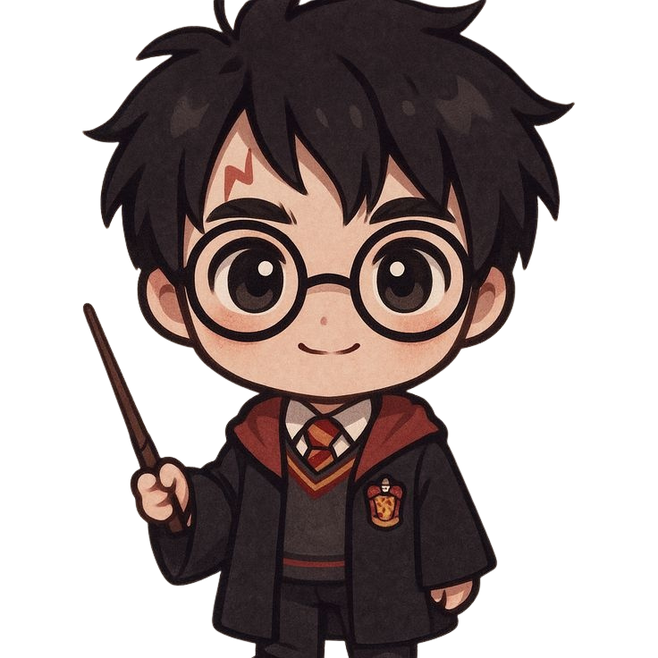
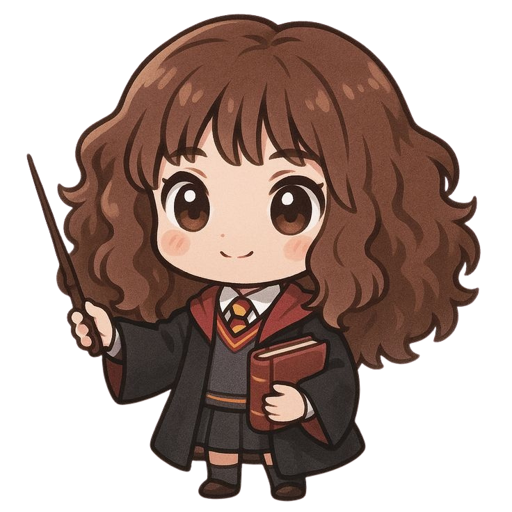
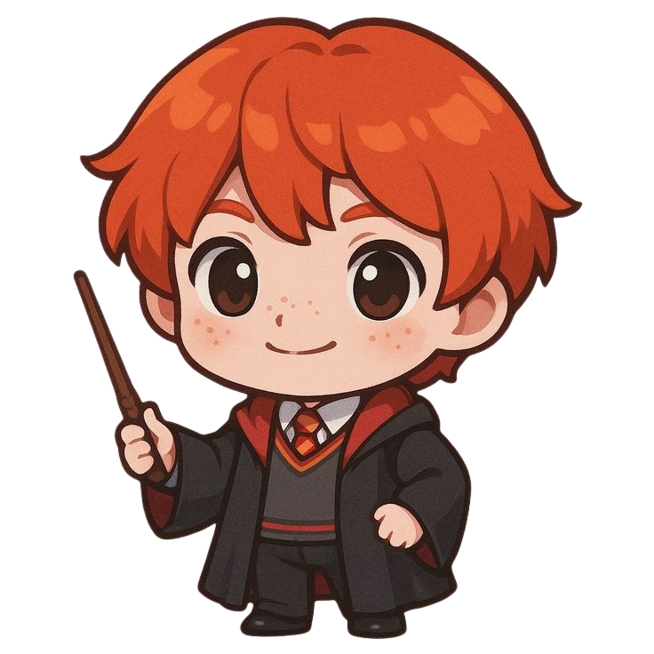
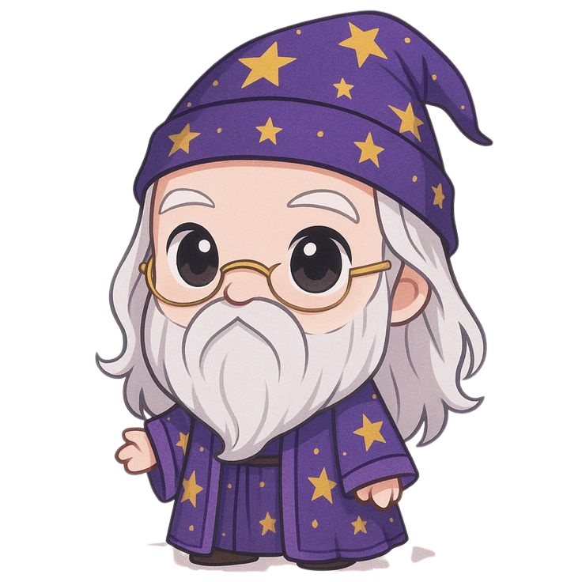
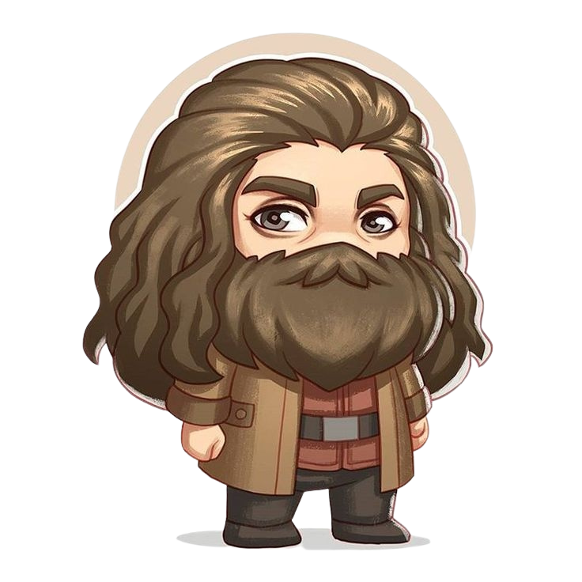
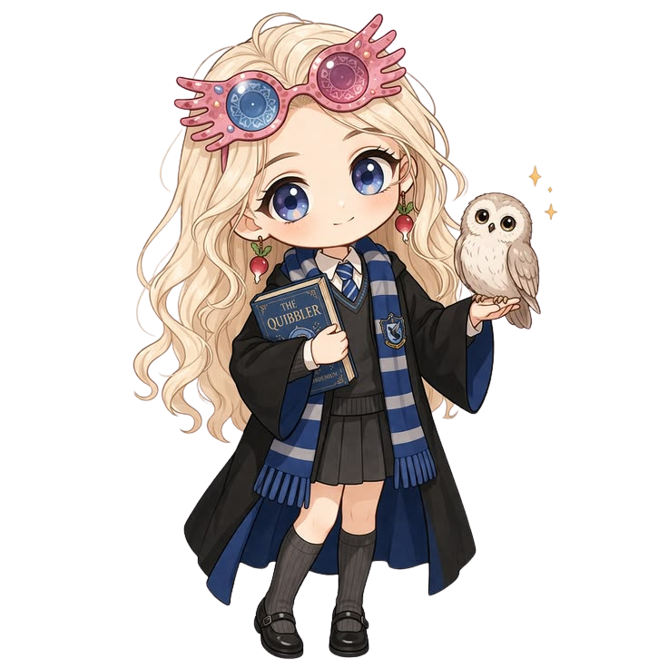
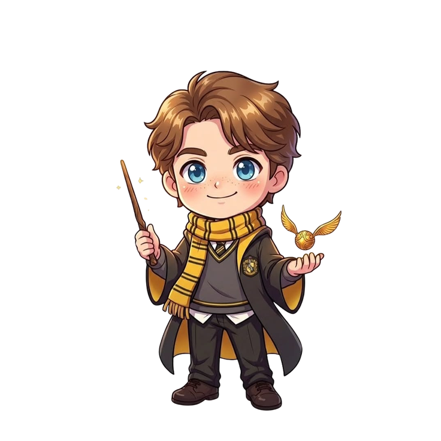
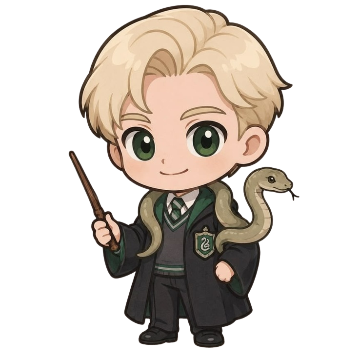
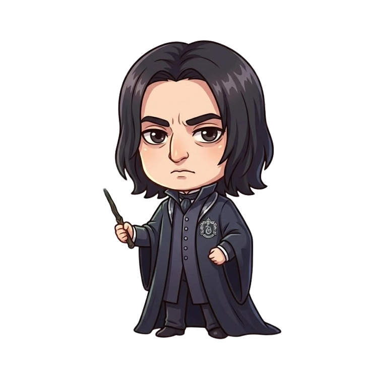
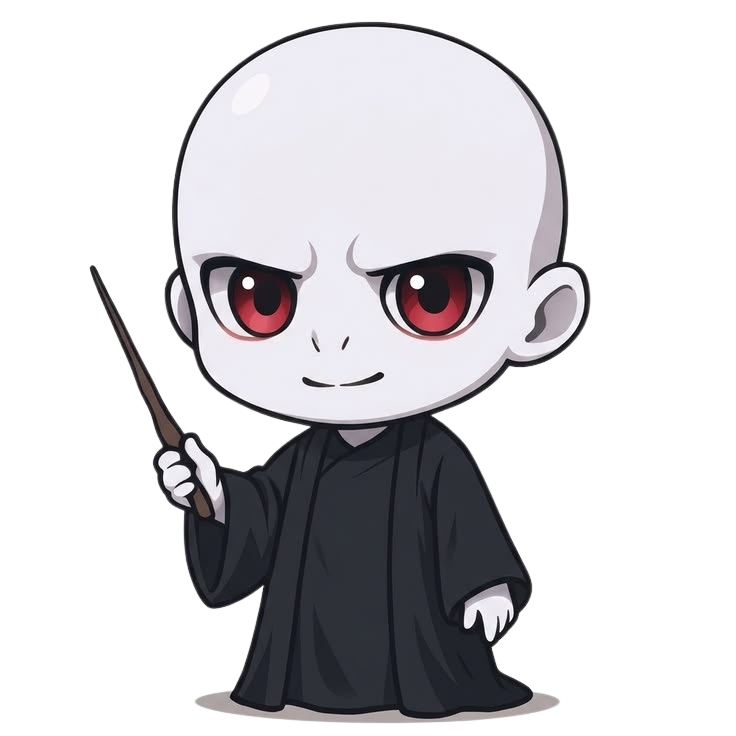

Voltar para o Início | Cadastro | Personagens










Harry nasceu em 31 de julho de 1980, filho de Tiago e Lílian Potter. Quando ainda era bebê, Voldemort atacou sua família e matou os pais dele, mas não conseguiu matar o menino. Harry ficou apenas com uma cicatriz em forma de raio na testa e ganhou o título de “o menino que sobreviveu”
Foi criado pelos tios, os Dursley, que o tratavam mal e escondiam a verdade sobre o mundo bruxo. Aos 11 anos, recebeu a carta de Hogwarts e descobriu quem realmente era. Na escola, foi selecionado para a Grifinória, fez amizade com Rony e Hermione e se destacou como apanhador no Quadribol.
Ano após ano, Harry enfrentou perigos ligados a Voldemort. Na batalha final, em Hogwarts, ele derrotou o bruxo das trevas e trouxe paz ao mundo bruxo. Anos depois, tornou-se auror, casou-se com Gina Weasley e teve três filhos.
Hermione nasceu em 19 de setembro de 1979, filha de dentistas trouxas. Ao descobrir que era bruxa, entrou em Hogwarts decidida a aprender tudo o que pudesse. Foi selecionada para a Grifinória e logo se destacou como a aluna mais dedicada da turma.
No começo, parecia apenas a “sabe-tudo” da sala, mas se tornou uma das melhores amigas de Harry e Rony depois de enfrentarem juntos um trasgo. Sua inteligência, sua lógica e seu conhecimento salvaram os três amigos muitas vezes. Também lutou por causas em que acreditava, como os direitos dos elfos domésticos.
Na guerra contra Voldemort, foi essencial na busca pelas Horcruxes. Depois da guerra, trabalhou no Ministério da Magia e chegou a se tornar Ministra da Magia. Casou-se com Rony Weasley.
Ronald Weasley nasceu em 1º de março de 1980, o sexto de sete filhos de uma família bruxa grande e muito unida, mas com poucos recursos. Cresceu usando roupas e objetos herdados dos irmãos mais velhos, o que às vezes o deixava inseguro.
Na viagem de trem para Hogwarts, conheceu Harry e os dois se tornaram melhores amigos para a vida toda. Foi para a Grifinória e se destacou no xadrez bruxo, além de ser um amigo leal e bem-humorado. Tinha medo de aranhas, mas enfrentou esse e muitos outros medos por Harry e Hermione.
Mesmo discutindo com os amigos em alguns momentos, Rony sempre voltou para ajudá-los e foi corajoso na batalha final. Depois da guerra, casou-se com Hermione, com quem teve dois filhos, e trabalhou ao lado do irmão George na loja de logros.
Alvo Percival Wulfrico Brian Dumbledore nasceu no final do século XIX e foi um dos maiores bruxos da história. Estudou em Hogwarts, na Grifinória, onde foi um aluno brilhante. Na juventude, foi amigo do bruxo Gellert Grindelwald, e essa amizade marcou profundamente sua vida.
Mais tarde, Dumbledore derrotou Grindelwald em um duelo lendário. Trabalhou como professor de Transfiguração em Hogwarts e depois se tornou diretor da escola. Também fundou a Ordem da Fênix, um grupo secreto que combatia Voldemort.
Sábio e gentil, sempre acreditou que as escolhas definem quem somos, mais do que as habilidades. Foi o grande mentor de Harry. Morreu no sexto livro, ao ser atingido pelo Avada Kedavra lançado por Snape, em um plano que os dois já haviam combinado.
Rúbeo Hagrid nasceu em 1928, filho de um bruxo e de uma giganta, o que o fez crescer com tamanho e força enormes. Estudou em Hogwarts, mas foi expulso injustamente no terceiro ano, acusado de abrir a Câmara Secreta. Dumbledore, que acreditava nele, deu-lhe o cargo de guarda-caça da escola.
Hagrid é conhecido pelo seu coração enorme e pelo amor por criaturas mágicas, até as mais perigosas, como dragões e hipogrifos. Foi ele quem entregou a Harry a notícia de que era bruxo e o levou pela primeira vez ao Beco Diagonal. Anos depois, tornou-se também professor de Trato das Criaturas Mágicas.
Leal a Dumbledore e a Harry até o fim, Hagrid carregou o corpo do garoto de volta ao castelo na batalha final, quando todos pensavam que ele estava morto.
Luna Lovegood nasceu em 13 de fevereiro de 1981 e cresceu em uma casa de formato curioso, perto da vila de Ottery St. Catchpole, com o pai, Xenofílio Lovegood, editor da revista O Pasquim. Perdeu a mãe, Pandora, ainda criança, durante um experimento com feitiços que deu errado.
Em Hogwarts, foi selecionada para a Corvinal. Era vista como estranha por muitos colegas, que a chamavam de “Lunática”, por causa de suas ideias fora do comum e de seu jeito sonhador. Ela, porém, nunca se incomodou com isso e sempre foi sincera, gentil e muito corajosa. Acreditava em criaturas que quase ninguém conhecia e enxergava coisas que os outros não percebiam, como os testrálios.
Conheceu Harry no quinto ano, e os dois logo se tornaram amigos. Luna entrou na Armada de Dumbledore, o grupo secreto que treinava feitiços de defesa, e lutou ao lado de Harry no Departamento de Mistérios e na Batalha de Hogwarts. Ao longo da guerra, também chegou a ser sequestrada pelos Comensais da Morte, por causa das críticas que seu pai fazia a Voldemort. Depois da guerra, tornou-se naturalista e viajou pelo mundo estudando criaturas mágicas. Casou-se com Rolf Scamander, neto do famoso Newt Scamander, e teve dois filhos.
Cedric Diggory nasceu em 1977 e era filho de Amos Diggory, funcionário do Ministério da Magia. Estudou em Hogwarts e foi selecionado para a Lufa-Lufa, a casa conhecida pela lealdade, pelo trabalho duro e pelo senso de justiça.
Era um dos alunos mais admirados da escola: bonito, simpático, educado e muito esportista. Foi capitão e apanhador do time de Quadribol da Lufa-Lufa e também monitor. Em uma partida contra a Grifinória, Harry caiu da vassoura por causa dos dementadores, e Cedric ofereceu uma nova partida, mostrando que queria uma vitória justa.
No quarto ano de Harry, Hogwarts sediou o Torneio Tribruxo, e Cedric foi escolhido como campeão da escola. Durante a competição, ele ajudou Harry em uma das provas, dando uma dica sobre o ovo de ouro, e mais uma vez agiu com honestidade. Na prova final, no labirinto, ele e Harry chegaram juntos à taça e decidiram tocá-la ao mesmo tempo, o que os levou a um cemitério, onde Voldemort retornou. Cedric foi morto por Pedro Pettigrew, a mando de Voldemort, e Harry trouxe seu corpo de volta. Sua morte marcou o fim da paz em Hogwarts e é lembrada como um símbolo da coragem e da bondade.
Draco Malfoy nasceu em 5 de junho de 1980, filho de Lúcio e Narcisa Malfoy, uma das famílias bruxas de sangue-puro mais ricas e influentes. Cresceu em uma mansão luxuosa, mimado e ensinado a acreditar que bruxos de sangue-puro eram superiores aos outros.
Ao chegar em Hogwarts, foi selecionado para a Sonserina e logo se tornou rival de Harry, depois de Harry recusar sua amizade no primeiro dia. Arrogante e provocador, vivia implicando com Harry, Rony e principalmente Hermione, que ele ofendia pela origem trouxa. Também jogou como apanhador no time de Quadribol da Sonserina, sempre disputando com Harry.
Com o tempo, a situação mudou. No sexto ano, Voldemort deu a Draco a missão de matar Dumbledore, sob a ameaça de punir sua família. Pressionado e assustado, ele tentou cumprir a tarefa, mas na hora H não conseguiu, mostrando que não era tão cruel quanto aparentava.
Na guerra final, hesitou em entregar Harry aos Comensais da Morte e acabou sendo salvo por ele durante o incêndio na Sala Precisa. Depois da guerra, a família Malfoy deixou de apoiar Voldemort. Anos depois, Draco se casou com Astoria Greengrass e teve um filho, Escórpio, que estudou em Hogwarts.
Severo Snape nasceu em 1960 e teve uma infância difícil, em uma família com muitos conflitos. Ainda criança, conheceu Lílian Evans, filha de trouxas, e os dois se tornaram amigos. Já em Hogwarts, foi selecionado para a Sonserina e seguiu caminhos diferentes dos dela.
Na juventude, aproximou-se de pessoas ligadas às artes das trevas e chegou a se unir aos Comensais da Morte. Quando percebeu que Voldemort ameaçava a vida de Lílian, procurou Dumbledore e passou a trabalhar contra o bruxo das trevas. Tornou-se professor de Poções e, mais tarde, diretor de Hogwarts.
Para muitos alunos, parecia frio e injusto, especialmente com Harry. Só no fim da história se descobriu que, durante anos, ele protegeu o filho de Lílian em segredo, movido pelo amor que sentia por ela. Morreu atacado por Voldemort, e é considerado um dos personagens mais complexos da saga.
Voldemort nasceu como Tom Marvolo Riddle, em 1926, filho de uma bruxa e de um trouxa. Cresceu em um orfanato e demonstrou desde cedo ser muito inteligente e poderoso, mas também cruel e manipulador. Em Hogwarts, foi selecionado para a Sonserina e era um aluno brilhante e admirado pelos professores.
Obcecado pela ideia de nunca morrer, passou a estudar magia das trevas e dividiu sua alma em várias partes, guardadas nas Horcruxes. Mudou o próprio nome para Lorde Voldemort e reuniu seguidores, os Comensais da Morte, para dominar o mundo bruxo.
Seu ataque à família Potter, que deveria ter sido sua maior vitória, acabou causando sua queda temporária, pois o feitiço rebateu nele. Voltou anos depois, mas foi finalmente derrotado por Harry na batalha de Hogwarts, depois que todas as suas Horcruxes foram destruídas.